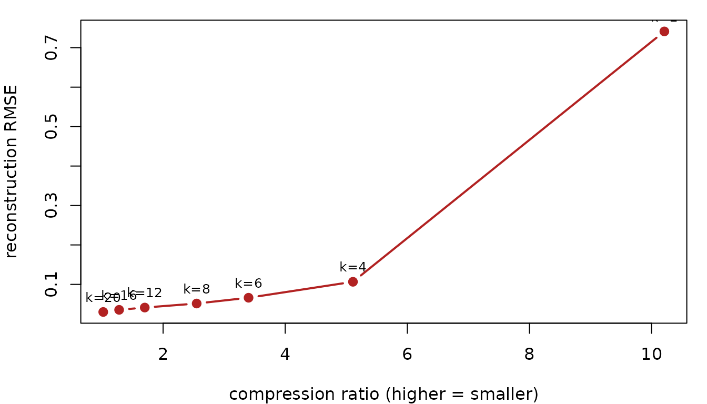

Compression is not useful unless you can inspect the trade-off. This vignette uses simple diagnostics: reconstruction error, finite-value checks, and the number of stored scalar values in the latent factors.
What is the baseline size?
The original matrix stores one value for every time-by-voxel pair.
mask <- array(TRUE, dim = c(4, 4, 4))
mask_vol <- neuroim2::LogicalNeuroVol(mask, neuroim2::NeuroSpace(dim(mask)))
set.seed(23)
n_time <- 30L
n_vox <- sum(mask)
t <- seq_len(n_time)
low_rank <- cbind(sin(2 * pi * t / n_time), cos(2 * pi * t / n_time))
X <- low_rank %*% matrix(rnorm(2 * n_vox), nrow = 2) +
matrix(rnorm(n_time * n_vox, sd = 0.05), nrow = n_time)
original_scalars <- length(X)
original_scalars
#> [1] 1920How does component count change error?
For a temporal basis, increasing k stores more basis
functions and usually reduces reconstruction error.
component_grid <- c(2L, 4L, 6L, 8L, 12L, 16L, 20L)
fits <- lapply(component_grid, function(k) {
encode(X, spec_time_dct(k = k), mask = mask_vol, materialize = "matrix")
})
latent_scalars <- function(lat) {
length(basis(lat)) + length(loadings(lat)) + length(offset(lat))
}
rmse <- function(lat) sqrt(mean((as.matrix(lat) - X)^2))
diagnostics <- data.frame(
k = component_grid,
latent_scalars = vapply(fits, latent_scalars, numeric(1)),
compression_ratio = round(original_scalars / vapply(fits, latent_scalars, numeric(1)), 2),
rmse = round(vapply(fits, rmse, numeric(1)), 5)
)
diagnostics
#> k latent_scalars compression_ratio rmse
#> 1 2 188 10.21 0.74127
#> 2 4 376 5.11 0.10655
#> 3 6 564 3.40 0.06612
#> 4 8 752 2.55 0.05147
#> 5 12 1128 1.70 0.04124
#> 6 16 1504 1.28 0.03545
#> 7 20 1880 1.02 0.03003The exact values depend on the signal, but the table gives the questions to ask: how many scalars were stored, how much error remains, and whether the reconstruction is numerically well behaved.
The trade-off is easier to read as a curve. Each point is one value
of k; the goal is the lower-right corner — low error
and high compression.

The curve has an elbow: error drops steeply as the first few
components are added, then flattens. Past the elbow you keep paying
compression to buy very little accuracy — at k = 20 the
factors store almost as many scalars as the original (1.02× ratio),
while the error is barely lower than at the elbow. The sweet spot is the
smallest k whose error is acceptable, where the ratio is
still high.
What should be checked before trusting a result?
A compact summary should include shape, finiteness, and non-degenerate variation. These checks are cheap enough to run while tuning an encoding.
best <- fits[[length(fits)]]
best_recon <- as.matrix(best)
data.frame(
same_shape = identical(dim(best_recon), dim(X)),
finite = all(is.finite(best_recon)),
input_sd = round(sd(as.vector(X)), 5),
reconstruction_sd = round(sd(as.vector(best_recon)), 5),
rmse = round(rmse(best), 5)
)
#> same_shape finite input_sd reconstruction_sd rmse
#> 1 TRUE TRUE 0.94699 0.94651 0.03003For larger timing studies, use benchmark_roundtrip() and
plot_benchmark_roundtrip(), and keep the same habit: pair
speed or storage summaries with reconstruction diagnostics.
Where to next?
-
vignette("choosing-basis-family")— pick the basis whose error curve drops fastest for your signal. -
vignette("explicit-vs-implicit-latents")— the object types these diagnostics apply to. -
?benchmark_roundtripand?plot_benchmark_roundtrip— timing across spatial families on your own data.